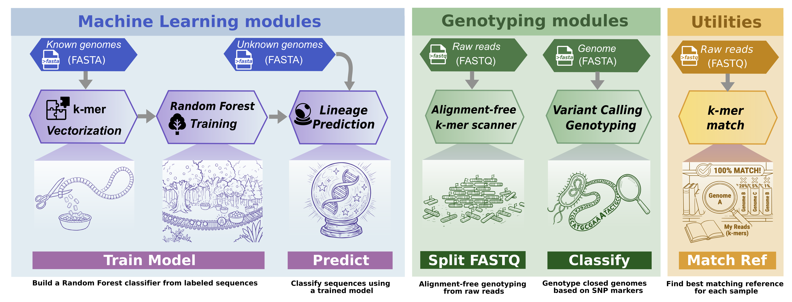

Home
Welcome to Pathotypr - Select a tool to get started
CPU
--%
RAM
--
Preparing
Processing
Finishing
Welcome to Pathotypr
A comprehensive toolkit for genome classification and variant genotyping using k-mer based methods.
Load M. tuberculosis markers & reference genome. Pathotypr works with any organism.

Documentation
Need help? Check the tooltips (?) next to each field for detailed explanations.
File Support
Supports FASTA, FASTQ, TSV, and GFF formats. Drag & drop or click to select files.
Console Output
Output will appear here...